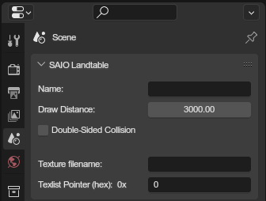

Landtable properties🔗︎

These are properties specific to landtable file.
Name🔗︎
The name of the landtable (file metadata)
Draw Distance🔗︎
Draw distance to be used ingame. Default value of 3000
Double Sided Collision🔗︎
If enabled, collision can be collided with from the "inside" too. Otherwise only from the "outside".
Texture Filename🔗︎
The name of the texture file to use.
Texlist Pointer🔗︎
The RAM address of the texture list to use.